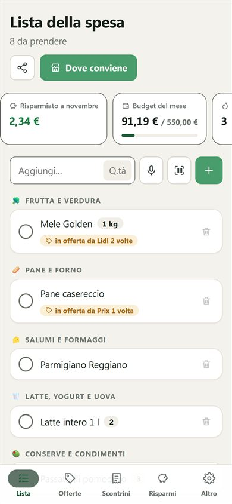
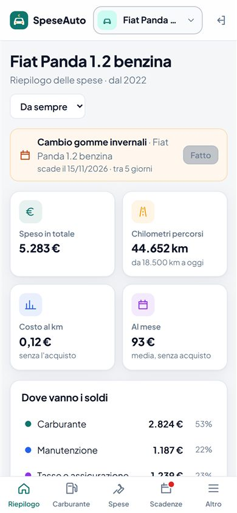

Guida · 4 minuti di lettura
App gratuite utili e senza pubblicità: come riconoscerle (e quali usare per casa, auto e montagna)
"Gratis" è la parola più usata negli store, e anche la più ambigua. Un'app può essere gratuita e piena di pubblicità, gratuita per sette giorni, o gratuita perché vende i tuoi dati. Ecco come capire cosa c'è dietro, prima di affidarle la tua spesa, la tua auto o i tuoi allenamenti.

Come si mantiene un'app gratuita
Sviluppare e tenere online un'app costa: server, domini, tempo. Se non paghi tu, qualcuno paga. I modelli più comuni sono:
- pubblicità: banner e video tra una schermata e l'altra. L'app è gratis, ma il tuo tempo e la tua attenzione no;
- dati: informazioni su di te usate per profilarti o per la pubblicità mirata;
- freemium: le funzioni base sono gratis, quelle utili si sbloccano con un abbonamento;
- prova gratuita: gratis per qualche giorno, poi a pagamento;
- donazioni: l'app è gratis per tutti e chi vuole sostiene il progetto con un contributo libero.
Nessun modello è "sbagliato" in sé, ma è giusto sapere quale stai accettando.
Cosa controllare prima di usarla
1. Chi c'è dietro
Un nome, un sito, un contatto. Se non riesci a capire chi ha fatto l'app e come scrivergli, è un campanello d'allarme.
2. La privacy, in parole semplici
Non serve leggere tutto: cerca quali dati raccoglie, a chi li dà, dove li conserva e se usa cookie di profilazione o pubblicità. Una buona informativa si capisce anche senza essere avvocati.
3. I permessi
Una lista della spesa non ha bisogno dei tuoi contatti. Se un'app chiede permessi che non c'entrano con quello che fa, chiediti perché.
4. Abbonamenti nascosti
Guarda se nello store ci sono "acquisti in-app" e prova le funzioni che ti servono prima di inserire dati importanti: scoprire dopo un mese che il riepilogo è a pagamento è frustrante.
5. Puoi portare via i tuoi dati?
Un'app seria ti permette di esportare i dati (per esempio in un file da aprire con Excel) e di cancellare l'account con tutto quello che contiene.
SpesaFox per la spesa, SpeseAuto per i costi dell'auto, Gippix per rivedere i tuoi giri in volo 3D. Gratis, senza pubblicità, dal browser del telefono.
Scopri le tre app
App web: niente store, niente installazione
Molte app utili oggi sono app web: si aprono dal browser, funzionano su telefono e computer e si possono aggiungere alla schermata Home come un'icona qualsiasi. Non occupano molto spazio, si aggiornano da sole e i dati restano nel tuo account anche se cambi telefono. Se non sai come aggiungerle, c'è la guida su come aggiungere un'app web alla schermata Home.
Tre app gratuite per casa, auto e montagna
Le app di Kindware Lab nascono da un'idea semplice: strumenti utili, gratuiti per tutti, senza pubblicità. Le sosteniamo con le donazioni di chi le usa.
SpesaFox, per la spesa
Una lista della spesa condivisa con la famiglia, anche a voce. Fotografi gli scontrini e lei impara prezzi e abitudini, ti mostra le offerte dei volantini sui prodotti che compri davvero e ti dice cosa sta per finire. Su spesafox.it.
SpeseAuto, per l'auto
Rifornimenti, consumi reali, manutenzione, bollo, assicurazione e scadenze con i promemoria per email. Ti dice quanto costa davvero ogni chilometro, anche con più auto e con la famiglia. Su speseauto.it.
Gippix, per la montagna
Carichi il file GPX di un'escursione o di un giro in bici e ottieni un video in volo 3D sulle montagne vere, con le tue foto, pronto per storie e reel. Su gippix.it.
Le nostre regole
- Gratis davvero: nessun abbonamento e nessuna versione premium nascosta.
- Zero pubblicità: né banner né dati venduti.
- I tuoi dati restano tuoi: server in Italia e puoi cancellare tutto quando vuoi.
Se un'app ti semplifica la vita, un caffè su Ko-fi ci aiuta a pagare server e domini e a costruire la prossima.
Domande frequenti
Come fa un'app a essere gratis senza pubblicità?
Di solito con donazioni volontarie, con un modello freemium o perché è un progetto personale. Le app di Kindware Lab sono gratuite per tutti e si sostengono con le donazioni su Ko-fi.
Come capisco se un'app ha abbonamenti nascosti?
Controlla nello store la voce "acquisti in-app" e prova le funzioni che ti servono prima di inserire dati importanti.
Le app web sono sicure quanto quelle dello store?
Dipende da chi le fa, come per le app dello store. Controlla che il sito usi una connessione sicura (https), chi c'è dietro e cosa dice l'informativa sulla privacy.